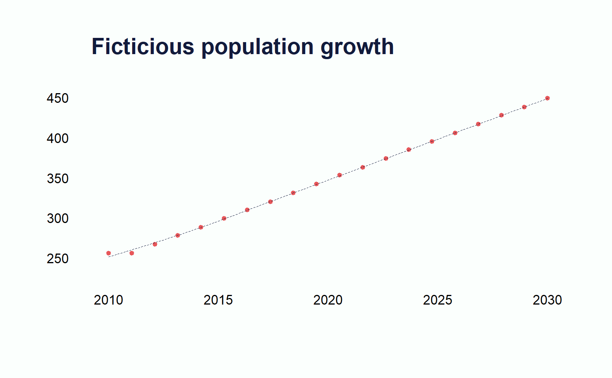

General Observations regarding population growth models
Models are useful in the absence of complete data or in the presence of overwhelming data. If data sources are lacking, the model would fill in the gaps to map out a population trajectory despite the holes. If data is overflowing, models help us make sense of it by simplifying and systematizing a reality that’s much too complex and “random” to be properly understood.
Models are abstract and dim representations of the real world.
Different frameworks
Population projections use certain assumptions that are held constant or may change depending on previous trends to indicate future trends. Population forecasts use previous and current data to estimate growth with a level of confidence.
Data to take into account
These three variables encapsulate the carrying capacity, the rate at which a population increases is proportional to the total space available.
Population density - determines growth rate (density dependency)
Total population - determines land area occupied
Land area - allows for density calculation
Exponential model
Assumes unlimited resources (including spatial resources) and no competition among members of the population, therefore, under this model, population projection will increase over time for positive growth rates.
\[
\begin{split}
P_{t} = N_{0}(1 - r)^{t} \\ \\
\text{or} \\ \\
P_{t} = N_{0}e^{rt} \\ \\
\text{and the growth rate can be calculated:} \\ \\
r = P^\frac{1}{t} -1 \\ \\
\text{assuming constant growth year by year}
\end{split}
\]
Logistic model
Limited resources and competition are present which leads to the population reaching a peak, its carrying capacity \(K\), and stabilizing or decreasing after that point. The rate of change \(\frac{dy}{dt}\) is proportional to the product of the current population \(P_{t}\) and \(K - P_{t}\),
The logistic model can be a realistic model only for periods of time of a few decades, but it begins to break down for longer periods of time.
\[
\begin{split}
\frac{dP_{t}}{dt} = rP_{t}(1 - P_{t}/K) \\ \\
\text{after integration and a little algebra, we get} \\ \\
P_{t} = \frac{K}{1 + N_{0}e^{-rt}}
\end{split}
\]
Code
calc_pop_growth<-function(){N=seq(25618349,45965168,length.out =20)r=2.18t=seq(2010,2030, by =1)K=numeric(length(N))P=numeric(length(N))P[1]<-N[1]# Start with the first element in Nfor(iin2:length(N)){K[i]<-N[i-1]*(1+P[i-1]*exp(-r*t[i]))P[i]<-K[i]/(1+N[i]*exp(-r*t[i]))# Calculate the population based on the previous K value}return(P)}x<-seq(2010,2030, length.out =20)y<-round(calc_pop_growth()/100000, digits =0)loess_line<-loess(y~x)par(bg ="#fbfffd")plot.new()plot.window(xlim =range(x), ylim =range(pretty(y)))points(x,y,col ="#e7575a", pch =20, cex =.7)# Predict values for a smooth line and plot itx_pred<-seq(min(x), max(x), length.out =100)# More points for smoother liney_pred<-predict(loess_line, newdata =x_pred)lines(x_pred, y_pred, col ="#121b3c", lwd =0.5, lty =2)axis(1, at =seq(x[1],x[length(x)], by =5), labels =round(seq(x[1],x[length(x)], by =5)), cex.axis =0.7, tcl =0.35, lwd =0)axis(2, lwd =0, las =2, cex.axis =0.7)title("Ficticious population growth", adj =0, col.main ="#121b3c")

Cohort-component model
As a projection tool, this method assumes the components of demographic change, mortality, fertility and migration, will remain constant throughout the projection period. As a forecasting tool, the vital statistics can be altered to reflect several population trajectories.
The cohort-component method has become the primary model of population projection and forecasting; however, within the last two decades demographers have begun to explore alternatives to the standard model, such as the addition of feedbacks, socioeconomic and environmental variables, and stochastic inputs (with confidence intervals on outputs).
This model faces quite a number of challenges. It assumes fertility, mortality and migration are unaffected by socioeconomic factors. There are no feedbacks from population size and structure of its basic inputs. It is a demographically self-contained projection model; nothing outside its three indicators is able to change it, even in the face of extreme developments. Lastly, it assumes continuity in fertility, mortality and migration patterns - the current rates today will decrease or increase by x year.
Suggestions
When this method is used for projection, the best route is to conduct two separate projections, each spanning five years instead of one 10 yr projection. The result of the first projection will be used as input for the second projection
Collect the data
This method requires information from the most recent and previous census. You’ll need the number of births during the past 10 yrs by the age of the mother and thus calculate age-specific fertility rates, which will then be used to predict number of births in the second iteration. When the age of the mother is not available, use general fertility rates. You’ll also need survival rates from life tables.
Age a population into the future
Take each age group of the population and ages it over time using survival rates.
get the census information distributed by age and sex
multiply base census population of a given age group by survival rates to obtain the population still alive 5 years later.
Add births
Calculate the number of births taking place during the projection interval. Age-specific fertility rates are used to estimate the number of births. The birth rates are multiplied by the number of women in their reproductive years. This multiplication will yield the annual number of expected births. Multiply them by the projection period to obtain the total number of births that take place in the future.
Use the following equation to find the number of male and female babies:
\[
\begin{split}
p(M) = \frac{\text{sex ratio of males ages}_{0-4}}{\text{sex ratio of females ages}_{0-4} + 100}\\ \\
p(F) = 1- p(M) \\ \\
\text{surviving males} = \text{male births} \times\text{survival rate} \\ \\
\end{split}
\]
Then add the net migrations, which can be positive or negative. First, calculate the net migration rate, then multiply these rates by the survived population to obtain the number of net migrants.
Example
Assume that Social Services wants to develop a plan for a woman’s center in a Virginia county. The goal is to project the number of women for the district from 2024 - 2029
Projecting the Population of Females for 2029
Age in 2024
Age in 2029
Census 2024
Survival Rate
Survived Population(c3 * c4)
00-05
0-4
0.98
0-4
5-9
3837
0.99
3764
5-9
10-14
3006
0.99
2986
10-14
15-19
2632
1
2626
15-19
20-24
2648
1
2637
20-24
25-29
3478
0.99
3456
25-29
30-34
4022
0.99
3988
30-34
35-39
4091
0.99
4038
35-39
40-44
3823
0.98
3745
40-44
45-49
3474
0.97
3360
45-49
50-54
2648
0.95
2519
50-54
55-59
1706
0.93
1590
55-59
60-64
1341
0.9
1212
60-64
65-69
1155
0.87
999
65-69
70-74
1180
0.82
963
70-74
75-79
1139
0.75
855
75-79
80-84
951
0.66
631
80+
85+
827
0.54
449
The first column shows the births that took place from 2024 - 2029 and the age of the girls in 2029 is found in column 2. The total number of girls by age groups is provided in column 3 and column 4 displays the survival rate for each age group. To find the number of women who survived until 2029 to multiply the survival rate in column 4 by the total number of girls/women in column 3.
Then we need to add the number of births taking place during this five year period. So we first calculate the age-specific fertility rates using number of births by age for prior years before the last census. And remember, we’re only interested in women of reproductive age.
Calculating Births
Ages
Births in 2024
Births in 2025
Births in 2026
Average number of births
Women Census 2024
Age Specific Fertility Rate
Survived Women
Annual births
15-19
324
273
302
300
2648
0.1132
2637
298
20-24
472
442
457
457
3478
0.1314
3456
454
25-29
427
411
416
418
4022
0.1039
3988
414
30-34
258
250
274
261
4091
0.0637
4038
257
35-39
102
93
74
90
3823
0.0235
3745
88
40-44
10
9
14
11
3474
0.0032
3360
11
Estimating births of female over projection period
Expected births
Female Births
Number of projected births
7614
3731
3660
Lastly, we need to calculate the net migration rate using survival rates, but first let’s define migration as the semi-permanent or permanent movement across political boundaries while net migration is the number of migrants who stayed (immigrants - out-migrants) in the country within the measurement period divided by the possibility of migration.
\[
\begin{split}
\text{net migration rate} = \frac{M_{0} - M_{n}}{population} \times K, \\
\text{where K is a constant, typically 100}
\end{split}
\] The process of obtaining migration information typically takes one of two approaches,
Direct method using continuous registration systems where people report their change in residence immediately to a local government.
Indirect measures using vital statistics, a residual method or the survival ratio method.
Most planners use indirect measures to come up with migration estimates.
\[
\begin{split}
P_{t+n} = P_{t-1} + \text{births} - \text{deaths} + \text{net migrants} \\ \\
\text{net migrants} = (P_{t+n} - P) - (\text{births} - \text{deaths}), \\ \\
\text{where} \\ \\
P_{t+n} = \text{current population} \\ \\
P_{t} = \text{the last census}
\end{split}
\] In most cases, planners use survival ratio methods to estimate net migration rates. The forward and reverse methods estimate net migration by age and sex.
Forward method
This method calculates the number of net migrants at the end of the period and assumes that all migration takes place at the end of the measurement period; all deaths occur in the community for which the estimates are being computed; all deaths are non-migrant deaths. These assumptions are obviously naive and may impact the projection estimates. \[
\begin{split}
m_{x+t} = p^{t}_{x+t} - s \times p^{0}_{x}, \\ \\
\text{where} \\
m_{x+t} = \text{net migration of persons age}_{x+t} \\
x = \text{an age or age group} \\
p^{0}_{x} = \text{population age x at the first census} \\
p^{t}_{x+t} = \text{population at the next census age}_{x+t} \\
s = \text{surival rate}
\end{split}
\] The survival rate is multiplied by the prior census population, and the result provides the expcted population expected at the next census period. By subtracting the expected population from the present census period, we obtain a difference assumed to represent migration
Reverse method
This method uses a slightly different approach to estimate number of net migrants; however, some strong assumptions are made as well. First, it assumes that deaths occur to people after migrating, and population change not accounted by fertility and mortality is due to migration, an assumption that is also present in the forward method.
To get the net number of migrants we use the previous population counts.The population in the last census, often called terminal population, is brought back to the initial census date to estimate the number of persons alive at the earlier date, whatever the date is for the last census. Then, by subtracting the expected population from the prior census data, we obtain the number of migrants.
Projecting the number of females for 2029
Machine Learning Models
ML models are adaptable and flexible but require high quality data for accurate predictions. On top of this, they can handle complex relationships (non-linear), and can identify intricate patterns by iterating through the data \(n\) number of times.
Bayesian Hierarchical Models
R packages available to implement these methods are bayesLife, bayesTFR, bayesDems, and bayesm.
---title: "the cohort component method of population projection"date: nowdescription: "basics components"format: html: css: \html\styles.css\..\..\.. code-fold: true code-tools: true code-overflow: wrap code-line-numbers: false#doi: citation: truedraft: true---```{r setup, include = FALSE}library(methods)library(tinytable)library(here)set.seed(2899)knitr::opts_chunk$set(fig.align = "center", fig.retina = 3, fig.width = 5.5, fig.height = (5.5 * 0.618), out.width = "90%", collapse = TRUE, cache = TRUE, comment = "#>", autodep = TRUE)options(digits = 3, scipen = 999, width = 300)options( rlang_trace_top_env = rlang::current_env(), rlang__backtrace_on_error = "none")```## General Observations regarding population growth modelsModels are useful in the absence of complete data or in the presence of overwhelming data. If data sources are lacking, the model would fill in the gaps to map out a population trajectory despite the holes. If data is overflowing, models help us make sense of it by simplifying and systematizing a reality that's much too complex and “random” to be properly understood. Models are abstract and dim representations of the real world. ## Different frameworksPopulation projections use certain assumptions that are held constant or may change depending on previous trends to indicate future trends. Population forecasts use previous and current data to estimate growth with a level of confidence. ## Data to take into account* These three variables encapsulate the carrying capacity, the rate at which a population increases is proportional to the total space available. 1. Population density - determines growth rate (density dependency) 2. Total population - determines land area occupied 3. Land area - allows for density calculation ## Exponential modelAssumes unlimited resources (including spatial resources) and no competition among members of the population, therefore, under this model, population projection will increase over time for positive growth rates.$$\begin{split}P_{t} = N_{0}(1 - r)^{t} \\\\\text{or} \\\\P_{t} = N_{0}e^{rt} \\\\\text{and the growth rate can be calculated:} \\\\r = P^\frac{1}{t} -1 \\\\\text{assuming constant growth year by year}\end{split}$$## Logistic modelLimited resources and competition are present which leads to the population reaching a peak, its carrying capacity $K$, and stabilizing or decreasing after that point. The rate of change $\frac{dy}{dt}$ is proportional to the product of the current population $P_{t}$ and $K - P_{t}$,The logistic model can be a realistic model only for periods of time of a few decades, but it begins to break down for longer periods of time. $$\begin{split}\frac{dP_{t}}{dt} = rP_{t}(1 - P_{t}/K) \\\\\text{after integration and a little algebra, we get} \\\\P_{t} = \frac{K}{1 + N_{0}e^{-rt}}\end{split}$$```{r, echo = TRUE}calc_pop_growth <- function(){N = seq(25618349,45965168,length.out = 20)r = 2.18t = seq(2010,2030, by = 1)K = numeric(length(N))P = numeric(length(N))P[1] <- N[1] # Start with the first element in N for (i in 2:length(N)) { K[i] <- N[i-1] * (1 + P[i-1] * exp(-r * t[i])) P[i] <- K[i] / (1 + N[i] * exp(-r * t[i])) # Calculate the population based on the previous K value } return(P)}x <- seq(2010,2030, length.out = 20)y <- round(calc_pop_growth()/100000, digits = 0)loess_line <- loess(y~x)par(bg = "#fbfffd")plot.new()plot.window(xlim = range(x), ylim = range(pretty(y)))points(x,y,col = "#e7575a", pch = 20, cex = .7)# Predict values for a smooth line and plot itx_pred <- seq(min(x), max(x), length.out = 100) # More points for smoother liney_pred <- predict(loess_line, newdata = x_pred)lines(x_pred, y_pred, col = "#121b3c", lwd = 0.5, lty = 2)axis(1, at = seq(x[1],x[length(x)], by = 5), labels = round(seq(x[1],x[length(x)], by = 5)), cex.axis = 0.7, tcl = 0.35, lwd = 0)axis(2, lwd = 0, las = 2, cex.axis = 0.7)title("Ficticious population growth", adj = 0, col.main = "#121b3c")```## Cohort-component modelAs a projection tool, this method assumes the components of demographic change, mortality, fertility and migration, will remain constant throughout the projection period. As a forecasting tool, the vital statistics can be altered to reflect several population trajectories. The cohort-component method has become the primary model of population projection and forecasting; however, within the last two decades demographers have begun to explorealternatives to the standard model, such as the addition of feedbacks, socioeconomicand environmental variables, and stochastic inputs (with confidenceintervals on outputs).This model faces quite a number of challenges. It assumes fertility, mortality and migration are unaffected by socioeconomic factors. There are no feedbacks from population size and structure of its basic inputs. It is a demographically self-contained projection model; nothing outside its three indicators is able to change it, even in the face of extreme developments. Lastly, it assumes continuity in fertility, mortality and migration patterns - the current rates today will decrease or increase by x year. ### SuggestionsWhen this method is used for projection, the best route is to conduct two separate projections, each spanning five years instead of one 10 yr projection. The result of the first projection will be used as input for the second projection### Collect the dataThis method requires information from the most recent and previous census. You'll need the number of births during the past 10 yrs by the age of the mother and thus calculate age-specific fertility rates, which will then be used to predict number of births in the second iteration. When the age of the mother is not available, use general fertility rates. You'll also need survival rates from life tables.### Age a population into the futureTake each age group of the population and ages it over time using survival rates. * get the census information distributed by age and sex * multiply base census population of a given age group by survival rates to obtain the population still alive 5 years later. ### Add birthsCalculate the number of births taking place during the projection interval. Age-specific fertility rates are used to estimate the number of births. The birth rates are multiplied by the number of women in their **reproductive years**. This multiplication will yield the annual number of expected births. Multiply them by the projection period to obtain the total number of births that take place in the future.Use the following equation to find the number of male and female babies:$$\begin{split}p(M) = \frac{\text{sex ratio of males ages}_{0-4}}{\text{sex ratio of females ages}_{0-4} + 100}\\\\p(F) = 1- p(M) \\\\\text{surviving males} = \text{male births} \times\text{survival rate} \\\\\end{split}$$Then add the net migrations, which can be positive or negative. First, calculate the net migration rate, then multiply these rates by the survived population to obtain the number of net migrants.## ExampleAssume that Social Services wants to develop a plan for a woman's center in a Virginia county. The goal is to project the number of women for the district from 2024 - 2029```{r, echo = FALSE}#| code-fold: trueage_2024 <- c( "00-05","0-4", "5-9", "10-14", "15-19", "20-24", "25-29", "30-34", "35-39", "40-44", "45-49", "50-54", "55-59", "60-64", "65-69", "70-74", "75-79", "80+")age_2029 <- c( "0-4", "5-9", "10-14", "15-19", "20-24", "25-29", "30-34", "35-39", "40-44", "45-49", "50-54", "55-59", "60-64", "65-69", "70-74", "75-79", "80-84", "85+")census_2024 <- c( NA,3837,3006,2632,2648,3478,4022,4091, 3823,3474,2648,1706,1341,1155,1180,1139,951,827)survival_rate<- c( 0.9809,0.9904,0.9934,0.9976,0.996,0.9938,0.9916,0.987,0.9795, 0.9673,0.9512,0.9322,0.9036,0.8653,0.8165,0.7505,0.6634,0.5426)survived_population <- c( NA,3763.71,2986.16,2625.68,2637.41,3456.44,3988.22,4037.82,3744.63,3360.40,2518.78,1590.33,1211.73,999.42,963.47,854.82,630.89,448.73)fake_census_data <- data.frame( age_2024, age_2029, census_2024, survival_rate, survived_population ) |> tt(digits = 2, caption = "Projecting the Population of Females for 2029", theme = "spacing" ) |> style_tt(align = "c") colnames(fake_census_data) <- c("Age in 2024","Age in 2029", "Census 2024","Survival Rate", "Survived Population(c3 * c4)")fake_census_data```The first column shows the births that took place from 2024 - 2029 and the age of the girls in 2029 is found in column 2. The total number of girls by age groups is provided in column 3 and column 4 displays the survival rate for each age group. To find the number of women who survived until 2029 to multiply the survival rate in column 4 by the total number of girls/women in column 3. Then we need to add the number of births taking place during this five year period. So we first calculate the age-specific fertility rates using number of births by age for prior years before the last census. And remember, we're only interested in women of reproductive age. ```{r, echo = FALSE} ages <- c( "15-19", "20-24", "25-29", "30-34", "35-39", "40-44" )births_2024 <- c( 324,472,427,258,102,10)births_2025 <- c( 273,442,411,250,93,9)births_2026 <- c( 302,457, 416, 274, 74,14)births_average <- (births_2024 + births_2025 + births_2026)/3women <- c( 2648, 3478,4022,4091,3823,3474)asfr <- births_average/womensurvived_women <- c( 2637.4, 3456.4,3988.2,4037.8,3744.6,3360)annual_births <- asfr * survived_womenfake_birth_data <- data.frame( ages, births_2024, births_2025, births_2026, births_average, women, asfr, survived_women, annual_births ) |> tt( digits = 2, theme = "spacing", caption = "Calculating Births" ) |> style_tt(aling = "c") colnames(fake_birth_data) <- c("Ages", "Births in 2024", "Births in 2025", "Births in 2026", "Average number of births", "Women Census 2024", "Age Specific Fertility Rate", "Survived Women", "Annual births")fake_birth_data# Using survival rates and the projection periodtotal_projected_births = sum(annual_births) * 5female_births = total_projected_births * .49projected_birth_females = female_births * .9809total_births_data <- data.frame( total_projected_births, female_births, projected_birth_females) |> tt(digits = 2, them = "spacing", caption = "Estimating births of female over projection period")colnames(total_births_data) <- c("Expected births","Female Births", "Number of projected births")total_births_data```Lastly, we need to calculate the net migration rate using survival rates, but first let's define migration as the semi-permanent or permanent movement across political boundaries while net migration is the number of migrants who stayed (immigrants - out-migrants) in the country within the measurement period divided by the possibility of migration.$$\begin{split}\text{net migration rate} = \frac{M_{0} - M_{n}}{population} \times K, \\\text{where K is a constant, typically 100}\end{split}$$The process of obtaining migration information typically takes one of two approaches, * Direct method using continuous registration systems where people report their change in residence immediately to a local government. * Indirect measures using vital statistics, a residual method or the survival ratio method. Most planners use indirect measures to come up with migration estimates. $$\begin{split}P_{t+n} = P_{t-1} + \text{births} - \text{deaths} + \text{net migrants} \\\\\text{net migrants} = (P_{t+n} - P) - (\text{births} - \text{deaths}), \\\\\text{where} \\\\P_{t+n} = \text{current population} \\\\P_{t} = \text{the last census}\end{split}$$In most cases, planners use survival ratio methods to estimate net migration rates. The **forward** and **reverse** methods estimate net migration by age and sex.#### Forward methodThis method calculates the number of net migrants at the end of the period and assumes that all migration takes place at the end of the measurement period; all deaths occur in the community for which the estimates are being computed; all deaths are non-migrant deaths. These assumptions are obviously naive and may impact the projection estimates. $$\begin{split}m_{x+t} = p^{t}_{x+t} - s \times p^{0}_{x}, \\\\\text{where} \\m_{x+t} = \text{net migration of persons age}_{x+t} \\x = \text{an age or age group} \\p^{0}_{x} = \text{population age x at the first census} \\p^{t}_{x+t} = \text{population at the next census age}_{x+t} \\s = \text{surival rate}\end{split}$$The survival rate is multiplied by the prior census population, and the result provides the expcted population expected at the next census period. By subtracting the expected population from the present census period, we obtain a difference assumed to represent migration#### Reverse methodThis method uses a slightly different approach to estimate number of net migrants; however, some strong assumptions are made as well. First, it assumes that deaths occur to people after migrating, and population change not accounted by fertility and mortality is due to migration, an assumption that is also present in the forward method.To get the net number of migrants we use the previous population counts.The population in the last census, often called *terminal* population, is brought back to the initial census date to estimate the number of persons alive at the earlier date, whatever the date is for the last census. Then, by subtracting the expected population from the prior census data, we obtain the number of migrants. ```{r, echo = FALSE}#| code-fold: trueage_2014 <- c( NA,NA,"0-4", "5-9", "10-14", "15-19", "20-24", "25-29", "30-34", "35-39", "40-44", "45-49", "50-54", "55-59", "60-64", "65-69", "70-74", "75+")age_2024 <- c( "0-4", "5-9","10-14", "15-19", "20-24", "25-29", "30-34", "35-39", "40-44", "45-49", "50-54", "55-59", "60-64", "65-69", "70-74", "75-79","80-84","85+")survival_rates <- c( 0.9892,0.9962,0.998,0.9966,0.9948,0.9942,0.9932,0.991,0.9864, 0.9785,0.9661,0.9463,0.9208,0.8855,0.8265,0.7281,0.5782,0.5524)census_2014 <- c( 3226,2468,2346,2387,2535,3332,3949,3144, 2515,1674,1337,1218,1326,1236,1127,1129,895,1089)expected_population <- ( survival_rates * census_2014)census_2024 <- c( 3006,2632,2648,3478,4022,4091,3823,3474,2648, 1706,1341,1155,1180,1139,951,827,545,409)net_migrants <-( census_2024 - expected_population)net_migration_rate <- ( net_migrants/census_2024)fake_net_migration <- data.frame( "Ages 2014" = age_2014, "Ages 2024" = age_2024, "Survival Rates" = survival_rates, "Census 2014" = census_2014, "Expected Population" = expected_population, "Census 2024" = census_2024, "Net Migrants" = net_migrants, "Net Migration Rate" = net_migration_rate) |> tt(digits = 2, theme = "spacing", caption = "Estimating Net Migration Rate using the Forward Survival Rate Method") |> style_tt(align = "c")```### Projecting the number of females for 2029## Machine Learning ModelsML models are adaptable and flexible but require high quality data for accurate predictions. On top of this, they can handle complex relationships (non-linear), and can identify intricate patterns by iterating through the data $n$ number of times. ## Bayesian Hierarchical ModelsR packages available to implement these methods are `bayesLife`, `bayesTFR`, `bayesDems`, and `bayesm`.
![]()